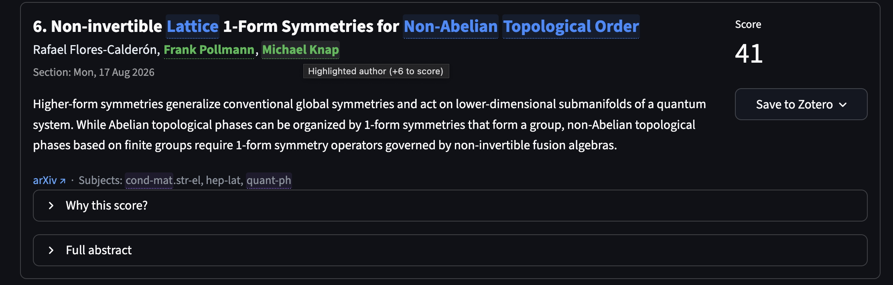

arXiv digest¶



Matched keywords and authors highlighted, a live score breakdown, one-click Save to Zotero.
🖥️ Start with the web app (recommended)¶
Three steps: install uv, clone and install the app, run arxiv-gui. Your browser opens with the ranked digest and you can start tuning right away.
1. Install uv¶
Only if you don't have uv yet: install it on your OS (one command), then come back
`uv` is a fast, single-binary Python package manager. Official install scripts:
- **macOS / Linux (curl)**
- **Windows (PowerShell)**
- **Homebrew (macOS / Linux)**
Then restart your terminal (so the `uv` command is on your `PATH`) and verify with `uv --version`. See the official [uv install docs](https://docs.astral.sh/uv/getting-started/installation/).
Already have uv? Skip straight to step 2.
2. Get the app¶
git clone https://github.com/isaac-tes/arxiv-digest.git
# git clone git@github.com:isaac-tes/arxiv-digest.git
cd arxiv-digest
uv tool install '.[gui]' # installs the arxiv-gui web app on your PATH
.[gui]pulls in the web app's dependencies (Streamlit + pandas). If you only ever use the CLI, omit the[gui]extra:uv tool install ..
3. Run it¶
arxiv-gui # web app — opens http://localhost:8501 in your browser
arxiv-digest --top 10 # CLI digest, prints ranked papers to stdout
In the GUI, hit Fetch papers in the sidebar and start reading. Feeds default to a condensed-matter / quantum-physics set. Pick a starter preset under Profiles if you'd rather start from a prepared topic bundle.
Alternatives¶
Prefer not to install anything? uvx runs the app on the fly from the
clone, with no PATH entry and nothing to uninstall:
uvx --from '.[gui]' arxiv-gui # web app — opens your browser
uvx --from '.[gui]' arxiv-digest --top 10 # CLI
Want to hack on the code? Run straight from the clone instead of installing as a tool:
uv sync --group dev # CLI + GUI + tests + docs
uv run pytest -q # full test suite, ~2s, no network
uv run streamlit run arxiv_gui.py # GUI in browser at localhost:8501
uv tool install puts both commands on your PATH in an isolated environment;
remove them with uv tool uninstall arxiv-digest. The [gui] extra pulls in
Streamlit + pandas; use uv tool install . for a CLI-only install.
Updating to the latest version¶
If you installed as a tool, one command, from anywhere, no clone needed:
It checks the latest release tag on GitHub and reinstalls the arxiv-digest /
arxiv-gui tools from it (keeping CLI-only installs CLI-only). On Windows it
prints the exact command to run, because the running .exe would lock the
upgrade.
You'll also get a one-line notice at the end of normal digest runs when a newer
release is out (checked against the GitHub releases API at most once a day,
cached in ~/.arxiv_scraper/update_check.json, silent when offline). Suppress
it with --no-update-check.
Prefer updating from your clone (e.g. to track a branch or an unreleased commit)?
cd arxiv-digest
git pull # newest code (or: git fetch && git checkout v0.3.0 for a tag)
uv tool install '.[gui]' --reinstall # rebuild the arxiv-digest / arxiv-gui tools
./scripts/update.sh does the same two steps in one shot.
Why
--reinstall?uv toolinstalls into an isolated environment that does not auto-track your clone, sogit pullalone won't update thearxiv-digest/arxiv-guicommands. The reinstall rebuilds them. (If youuv runfrom the clone instead of installing as a tool, justgit pullis enough.)
👋 Most people should use the web app. It runs in your browser, shows each paper's keyword / author / subject hits highlighted in color, explains why it scored what it did, and offers one-click Save to Zotero. The CLI is there for those who want a scriptable, terminal-first digest sharing the exact same preferences and config.
Both share the same Config and arxiv_config.json; tweak in one, the other picks it up.
Fetches arXiv listing pages for any category, scores papers by your keyword / author / subject preferences, and presents the ranked digest as a web app (arxiv-gui) for interactive browsing and tuning, or as a CLI report (terminal, Markdown, JSON) for automation. Works with any arXiv feed (hep-th, cs.LG, math.AG, …); the defaults just ship a condensed-matter / quantum-physics set you can replace.
Other arXiv-digest tools already exist (see Similar projects). This one is separate from them and scores a different way: with transparent keyword, author, and subject rules rather than a language model. It needs no API key, runs on any arXiv category, and can save matches into Zotero.
Defaults¶
- Feeds: any arXiv listing works; ships defaulting to
cond-mat,cond-mat.mes-hall,cond-mat.quant-gas,quant-ph(edit in the Feeds tab orarxiv_config.json) - Timeframe:
pastweek(a true seven-day submission window) - Top N: 20
- Output: stdout
Starter presets¶
Three built-in, read-only topic bundles (keywords + authors + feeds) give you a starting point instead of the generic default:
| Preset | Focus |
|---|---|
open-quantum-systems |
Lindbladian dynamics, dissipation, driven-dissipative & non-Markovian systems |
quantum-many-body |
Thermalization, many-body localization, tensor networks, strongly correlated systems |
floquet-topological |
Floquet engineering, periodically driven systems & topological matter |
Pick one in the GUI Profiles → Starter presets (Load replaces your working config, Add merges it in) or on the CLI with --preset NAME / --add-preset NAME (see --list-presets). Presets never overwrite your saved profiles or arxiv_config.json; they only change the in-memory config until you explicitly save. Topic sets are editable starting points tuned for quantum physics.
GUI guide¶
Launching¶
The quickest way to open it is the installed arxiv-gui command:
Or, running straight from a clone (after uv sync --group gui):
uv sync --group gui # one-time, installs Streamlit + pandas
uv run streamlit run arxiv_gui.py # opens http://localhost:8501 in your browser
The GUI opens http://localhost:8501 in your browser automatically. The first time you launch, the app loads arxiv_config.json if present in the project root, otherwise the built-in defaults. Profiles you save go to ~/.arxiv_scraper/profiles/ and persist across sessions / project clones.
The daily flow¶
- Sidebar: pick Timeframe (
todayorpastweek), Top N, and which Feeds to fetch from. Click Fetch papers. The fetch is cached for 1 hour per(timeframe, feeds)combo, so re-clicking is instant; use Clear fetch cache to force a refresh. Thepastweekfetch queries each selected category and uses arXiv's announcement sections for its day labels. - Papers tab: papers appear ranked. Open Why this score? under any paper to see exactly which keywords / authors / subjects contributed. Open Full abstract to read more without leaving the page.
- Tweak preferences in the Keywords, Authors, Low priority, and Scoring tabs. The Papers tab re-ranks live on the cached fetch, with no re-fetch needed. Want to check a specific paper outside the current fetch? Use the Score a paper tab.
- Download the current ranked list as Markdown or JSON via the buttons above the search box. The Markdown is
--output-markdown's format; the JSON holds the same rankedentriesas--output-json(it omits the CLI-onlyfeed_urls/sectionsheader fields), so consumers that read theentrieskeep working.
Tabs in detail¶
The GUI has eight tabs, in order: Papers, Score a paper, Keywords, Authors, Low priority, Feeds, Scoring, Profiles.
- Papers: ranked list, search box (filters by title / authors / abstract substring), MD + JSON download buttons. Per paper: rank, title, authors, section, summary, arXiv link, score badge, a Save to Zotero button, expandable score breakdown, expandable full abstract.
- Score a paper: paste an arXiv link or ID to see how it would score under your current config, why it did (or didn't) appear in the digest, and save it to Zotero.
- Keywords: spreadsheet-style editor for
core_keywords. Add/remove rows, click Save core keywords. Reset to defaults restores the built-in list. Each match adds the Per-keyword bonus (default +6) to a paper's score. - Authors: same pattern for
named_authors. Default +6 per match. Match is case-insensitive substring on author string. - Low priority: penalty list. If any term matches, the paper takes the Low-priority penalty (default −5), once, not per hit.
- Feeds:
name → URLeditor. Add custom arXiv lists (e.g.hep-th=https://arxiv.org/list/hep-th/new). The/new//pastweeksuffix is rewritten by the timeframe selector at fetch time, so you can paste any base URL. - Scoring: a Whole-word matching toggle (default on; untick for legacy substring matching), then number inputs for each weight: per-keyword bonus, per-author bonus, low-priority penalty, long-abstract bonus, the abstract-length threshold, and a per-feed subject bonus for every configured feed (subject scoring is driven by
feed_weights; defaultscond-mat.quant-gas+4,cond-mat.mes-hall+4,quant-ph+2). Apply weights makes the change live; Reset to defaults puts it back. - Profiles: Starter presets at the top: pick a built-in bundle and Load (replace working config) or Add (merge it in), never touching your saved profiles or
arxiv_config.json. Below, save the current full config under a name (e.g.topology-mode,quantum-gas-mode). Files live in~/.arxiv_scraper/profiles/<name>.json. Buttons: Load, Export (download JSON), Delete, Import (upload JSON). Below: Write project config dumps the current config toarxiv_config.jsonnext toarxiv_digest.py, which is what the CLI picks up on the next run. Use this to push your GUI tweaks back into your daily CLI digest.
Saving papers to Zotero¶
The GUI can save papers straight into your local Zotero library, using the
same mechanism the official Zotero Connector uses, with no API-key setup. A
Save to Zotero popover sits next to each paper's score (and in the Score a
paper tab). It fetches the paper from the arXiv export API and writes a
preprint item with the same fields, category tags, and PDF/Snapshot
attachments the Zotero Connector would produce, plus an arxiv-digest source
tag.
From the popover you choose a collection in your personal My Library (or its root) and click Save. A transient Saved ✓ confirms a successful save for ~30 seconds before the Save button returns. Failed or denied saves are shown as errors. You are free to re-save a paper later; the bridge prevents creating a duplicate of the same arXiv item in My Library.
Group libraries: The local Zotero HTTP API does not expose a supported group-library listing or write route, so this app intentionally offers personal My Library only. To put a saved paper in a group, drag or copy it from My Library to the group in Zotero.
To enable saving, Zotero's local HTTP API must be switched on:
- Install/run Zotero 10 or newer: older versions expose a read-only local API and cannot save.
- Open Zotero → Settings (macOS: Preferences) → Advanced tab.
- Tick "Allow other applications on this computer to communicate with Zotero".
- Restart Zotero if prompted. The GUI sidebar should now show Zotero: connected.
- On the first save, Zotero pops an "Allow this application to modify your library?" dialog: click Allow (or Always Allow) once, then save again.
The sidebar shows a Zotero: connected / not running status pill so you can tell at a glance whether saving is available. See the GUI guide for full details.
Tips¶
- The score breakdown is the fastest way to figure out why a low-priority hit overshadowed a keyword match. Open it before re-tweaking weights blindly.
- Profiles are pure JSON; you can hand-edit them outside the GUI or check them into a separate dotfiles repo if you want them tracked.
- The GUI never writes back to
arxiv_config.jsonautomatically. You must press Write project config in the Profiles tab. That keeps surprises out of your CLI workflow.
CLI guide¶
Prefer a terminal / scriptable digest (for cron, CI, or --output-markdown/--json
reports)? The arxiv-digest CLI shares the exact same Config, arxiv_config.json,
and starter presets as the web app: tweak in one, the other picks it up.
Basic invocations¶
# Default run: pastweek, top 20, all four configured feeds
uv run python arxiv_digest.py
# Today's papers, top 10
uv run python arxiv_digest.py --timeframe today --top 10
# Pastweek with specific feeds
uv run python arxiv_digest.py --timeframe pastweek --feed cond-mat --feed quant-ph
# Write reports to ./reports/digest-YYYY-MM-DD.{md,json}
uv run python arxiv_digest.py --output-markdown --output-json
# Add a keyword and persist the change to arxiv_config.json
uv run python arxiv_digest.py --add-core "rydberg" --save-config
# Inspect the resolved config without fetching anything
uv run python arxiv_digest.py --list-config --no-config
All flags¶
| Flag | Purpose |
|---|---|
--feed NAME |
Select feed (repeatable). Either a name from feeds config or a full URL. |
--top N |
Override number of entries to print (default: 20). |
--timeframe {today,pastweek} |
Override which arXiv listing window to scrape. |
--sections NAME ... |
Limit to specific date-section titles (e.g. "Thu, 4 Dec 2025"). |
--include-replacements |
Keep arXiv Replacement submissions (hidden by default; only present in the today feed). |
--score ID_OR_URL |
Score a single arXiv paper (by id or URL) against the current config and print its per-aspect breakdown, without fetching the whole digest. |
--output-json [PATH] |
Write JSON. Bare flag → reports/digest-YYYY-MM-DD.json. |
--output-markdown [PATH] |
Write Markdown. Bare flag → reports/digest-YYYY-MM-DD.md. |
--config PATH |
Use a non-default config JSON path. |
--no-config |
Ignore the config file even if present (use built-in defaults). |
--preset NAME |
Start from a built-in starter preset (replaces the config's content). |
--add-preset NAME |
Union a starter preset's keywords/authors/feeds onto the current config (repeatable). |
--list-presets |
List the built-in starter presets and exit. |
--save-config |
Persist current (modified) config back to --config path. |
--list-config |
Print the resolved config as JSON and exit. |
--no-update-check |
Skip the cached check for a newer release at the end of the run. |
--verbose |
Log fetch progress to stderr. |
--add-core W / --remove-core W / --rename-core OLD:NEW |
Mutate core_keywords. |
--add-author N / --remove-author N / --rename-author OLD:NEW |
Mutate named_authors. |
--add-low-priority W / --remove-low-priority W / --rename-low-priority OLD:NEW |
Mutate low_priority_kw. |
--add-url NAME=URL / --rename-url OLD:NEW / --delete-url NAME |
Mutate the feeds map. |
--set-default-feed NAME |
Set which feed(s) are used when --feed is omitted (repeatable). |
The --add-* / --remove-* / --rename-* flags only stick if combined with --save-config; otherwise they apply for that run only.
Configuration file¶
arxiv_config.json lives next to arxiv_digest.py (gitignored). Structure:
{
"feeds": { "cond-mat": "https://arxiv.org/list/cond-mat/new", ... },
"default_feeds": ["cond-mat.quant-gas", "cond-mat.mes-hall", "quant-ph", "cond-mat"],
"core_keywords": ["topological", "fqhe", ...],
"named_authors": ["bloch", "cirac", ...],
"low_priority_kw": ["film", "growth", ...],
"top_n": 20,
"timeframe": "pastweek",
"include_replacements": false,
"word_boundary_matching": true,
"feed_weights": {
"cond-mat.quant-gas": 4, "cond-mat.mes-hall": 4, "quant-ph": 2
},
"weights": {
"core_keyword": 6, "named_author": 6,
"low_priority_penalty": -5,
"long_abstract_bonus": 1, "long_abstract_threshold": 200
}
}
The CLI never exposes flags for weights. To tune scoring weights, use the GUI's Scoring tab and click Write project config, or hand-edit the JSON. Subject scoring is driven by feed_weights (a bonus per feed name found in a paper's subjects); configs written before v0.3.0 auto-migrate on load.
Scoring (defaults)¶
| Rule | Default weight |
|---|---|
| Per matched core keyword | +6 |
| Per matched named author | +6 (author list only) |
| Per-feed subject bonus | per feed: e.g. cond-mat.quant-gas +4, cond-mat.mes-hall +4, quant-ph +2 |
| Any low-priority term matches (applied once) | −5 |
| Abstract longer than 200 chars | +1 |
Scalar weights live in weights; subject scoring in feed_weights, both configurable in arxiv_config.json or the GUI Scoring tab. Any arXiv category works: add a feed, give it a feed_weights bonus.
Matching is whole-word by default (word_boundary_matching: true). Keywords, authors, and low-priority terms match only as complete tokens: mpo scores MPO / MPO-based / the mpo ansatz but not temporal or composition, and author ma no longer matches Mao. Hyphens, spaces, and punctuation count as boundaries. Set word_boundary_matching: false (or untick Whole-word matching in the GUI Scoring tab) for the legacy substring behavior. Subjects/feed_weights always use substring matching, so a parent feed cond-mat still matches cond-mat.quant-gas.
Output formats¶
- Console (default): copy-paste friendly digest, ranked.
- JSON (
--output-json): structured data withgenerated_at,feed_urls,top_n,total_papers, and the rankedentries. - Markdown (
--output-markdown): formatted for Notion / Obsidian / Slack. - Plain text: redirect stdout:
... > digest.txt.
Tests¶
uv sync --group test
uv run pytest # full suite (~1s, no network)
uv run pytest -k weight # filter by name
Covers Config defaults & JSON round-trips, every scoring rule independently, a property test that score_paper == explain_score(...)["total"], CLI flag handling, formatting helpers, HTML parsing of fetch_feed against a fixture, and a Streamlit GUI render smoke test. requests.get is monkey-patched so no network calls hit arXiv during tests.
uv sync --group dev installs both test and gui groups in one shot.
Similar projects¶
AutoLLM/ArxivDigest is the other project in this space. It uses GPT to rank papers against a plain-language description of your interests and can email you the digest, but it has not been updated since May 2024. It expects an OpenAI API key and a SendGrid account.
This project is independent of it and shares no code with it. The two suit different workflows:
- AutoLLM/ArxivDigest asks a language model how relevant a paper is; arxiv-digest applies fixed scoring rules you can inspect and tune.
- AutoLLM/ArxivDigest is set up to run as a scheduled GitHub Action that emails results; arxiv-digest runs locally, on demand, and writes console, Markdown, or JSON output.
- arxiv-digest adds a browser GUI, per-paper score breakdowns, and one-click Save to Zotero; AutoLLM/ArxivDigest does not.
Both are MIT-licensed. Neither depends on the other.